— UNA GALLETITA LLENA DE MAGIA —
Conoce a Ginger
¡Hola! Soy Ginger, la galletita de jengibre que da vida a esta dulce aventura.
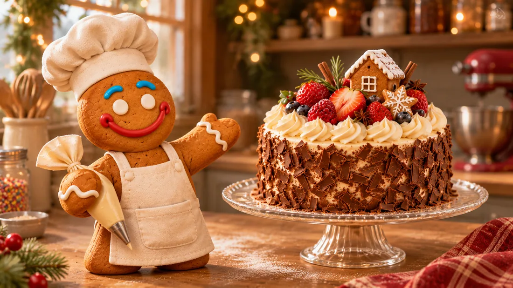
— UNA HISTORIA ILUSTRADA —
La historia de Ginger
En memoria de Silvia (Q.E.P.D).
1959-2024
Madre, suegra y abuelita.
Gracias por tu amor infinito, por creer en nosotros y por acompañarnos incluso ahora, cuando este sueño se volvió realidad.
Tu luz nos sigue guiando.
Hola, soy Ginger y esta es mi historia...
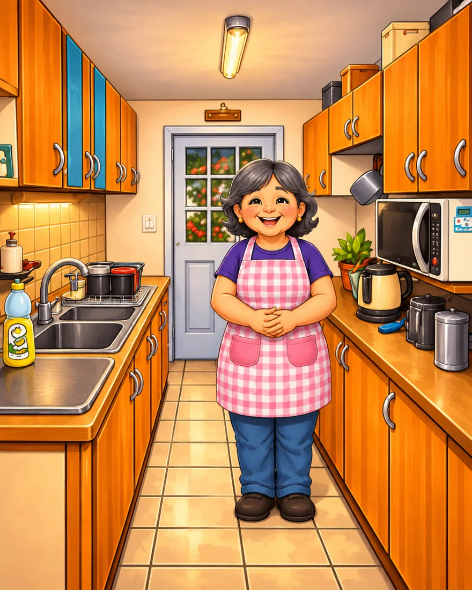
La abuela Silvia
Todo comenzó en la cocina de una abuelita llamada Silvia, a quien le encantaban los dulcecitos que hacía su yerno. El lugar estaba lleno de aromas dulces, canela, risas y un horno bien calentito.
2 / 14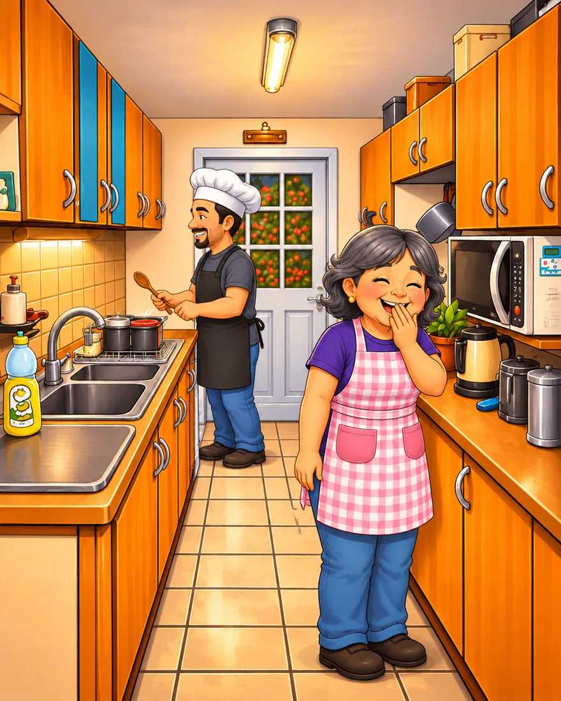
Recetas para recordar
Ella siempre miraba con atención las preparaciones de su yerno, probaba y sonreía. Un día con mucha curiosidad, decidió copiar sus recetas, para que nunca se perdieran.
3 / 14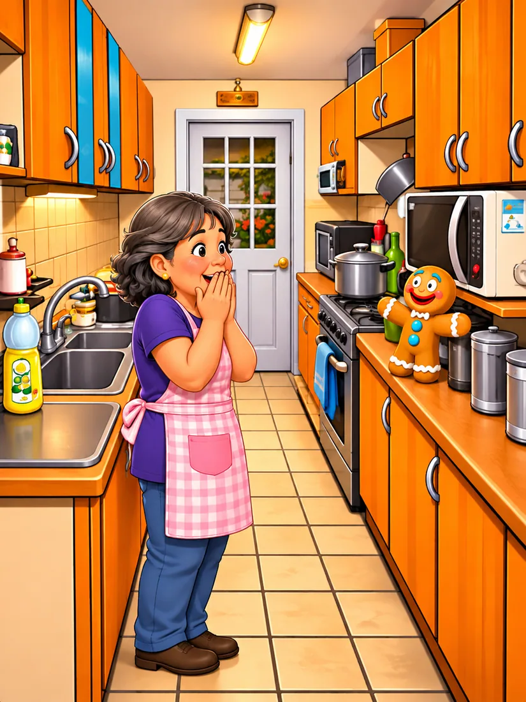
Ginger cobra vida
Así fue como, entre harina, especias y una pizca de magia invisible, nací yo: una pequeña galletita de jengibre. Fui creada con cariño y amasada con un montón de sueños que pedían salir al mundo. Y entonces, sin pensarlo demasiado, di un brinco valiente... y me marché.
4 / 14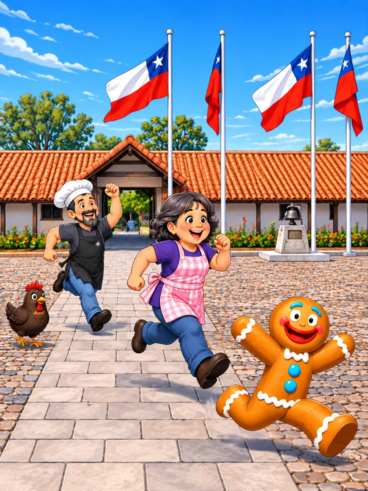
El primer desafío
—¡No me alcanzarán! —dije— porque cuando uno confía en sí mismo, los pasos se vuelven más firmes y el corazón más valiente. —El mundo es grande, y mis pasos también—
Cuna de Prat, Ninhue.
5 / 14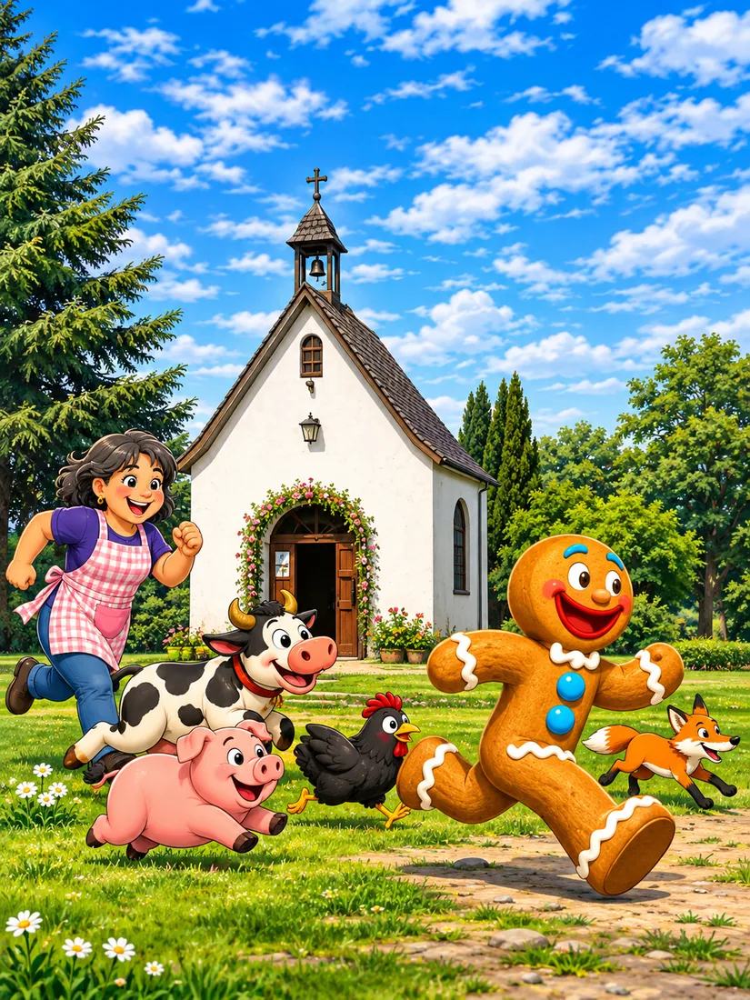
Una carrera compartida
Corrí más rápido que el yerno y la abuela, más ágil que la gallina negra, más ligero que el chancho Pancho, más firme que la vaca Lola. Ni siquiera el astuto zorro logró detenerme.
Santuario de Schoenstatt, Chillán Viejo.
6 / 14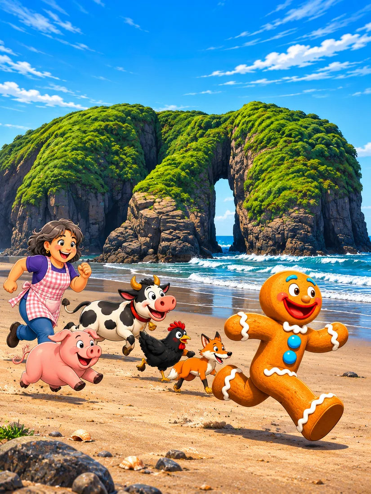
Descubriendo Ñuble
Mientras corría, descubrí caminos, paisajes y lugares llenos de magia en la Región de Ñuble.
Iglesia de Piedra, Cobquecura.
7 / 14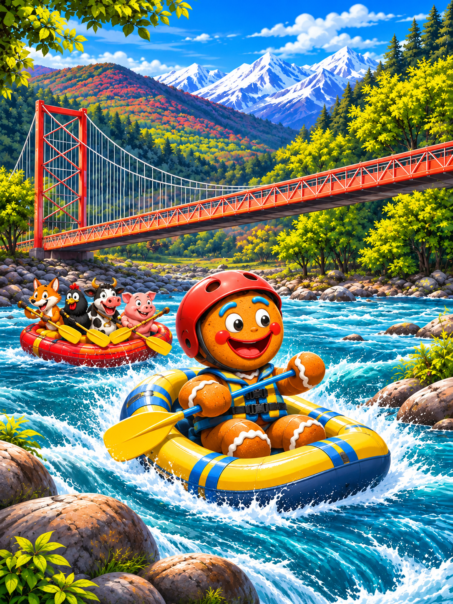
Siempre adelante
—¡Nadie podrá atraparme! —repetía— Porque soy Ginger, el hombre de Jengibre.
Puente Las Veguillas, San Fabián.
8 / 14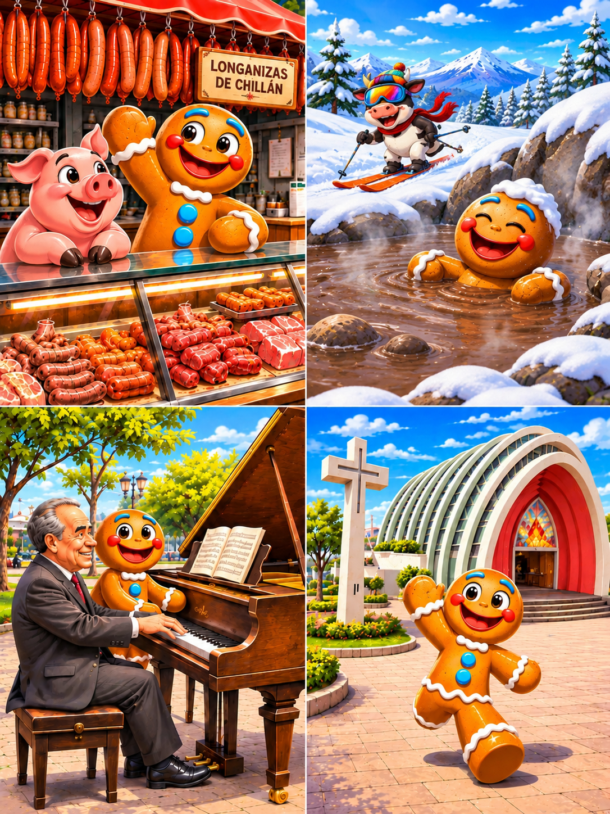
Por las comunas
Y continué mi recorrido por las 21 comunas, de la hermosa Región de Ñuble.
Mercado Municipal, Chillán; Valle Hermoso, Pinto; Escultura homenaje, Plaza de Armas, Chillán; Catedral de Chillán.
9 / 14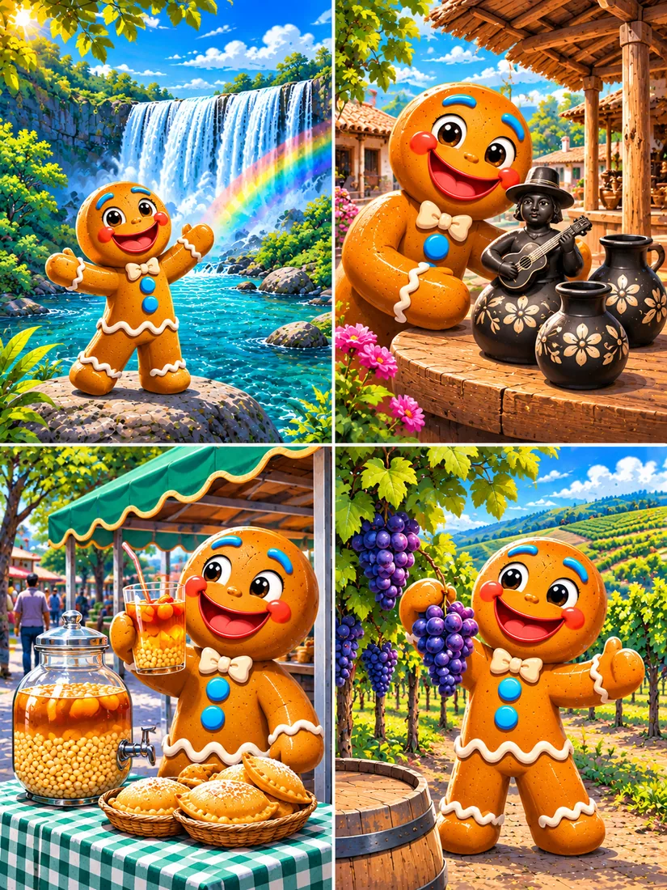
Entre tradiciones
—¡Nadie podrá atraparme! —repetía— Porque soy Ginger, el gran hombre de Jengibre.
Salto del Itata, Yungay; Quinchamalí, Chillán; Moteras, Av. O’Higgins, Chillán; Valle del Itata de Ñuble.
10 / 14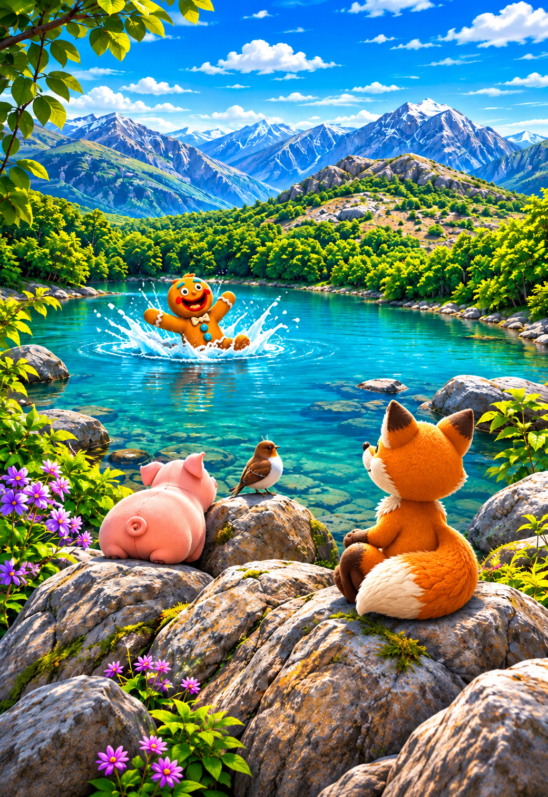
Aprender del camino
Cada paso me enseñó que se puede avanzar con alegría y perseverancia.
Laguna el Huemul, Valle Las Trancas.
11 / 14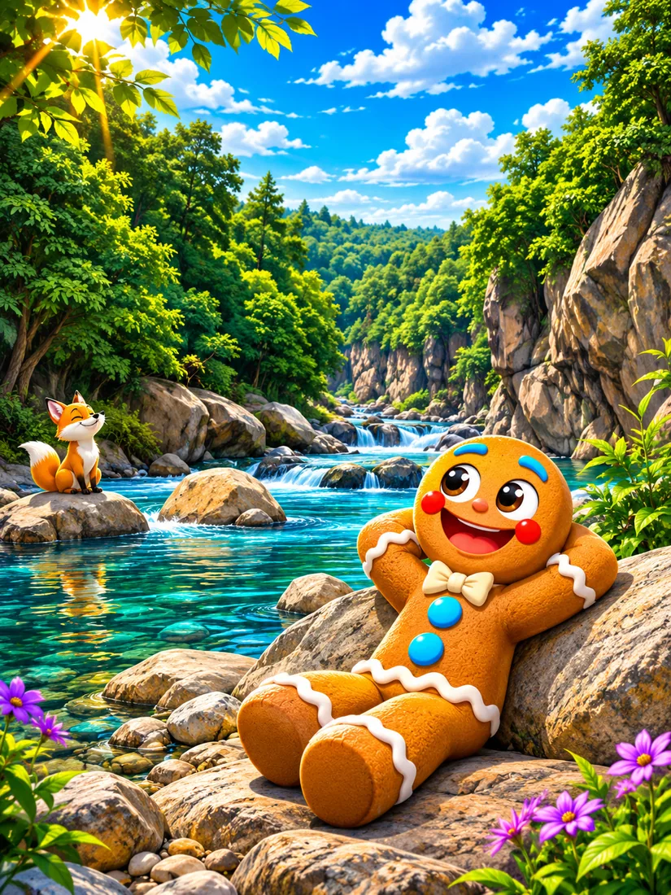
Detenerse para crear
Hasta que un día me detuve, respiré profundo y entendí algo importante: “No siempre hay que correr, la verdadera magia nace cuando nos atrevemos a crear”.
Catedrales de piedra, El Carmen.
12 / 14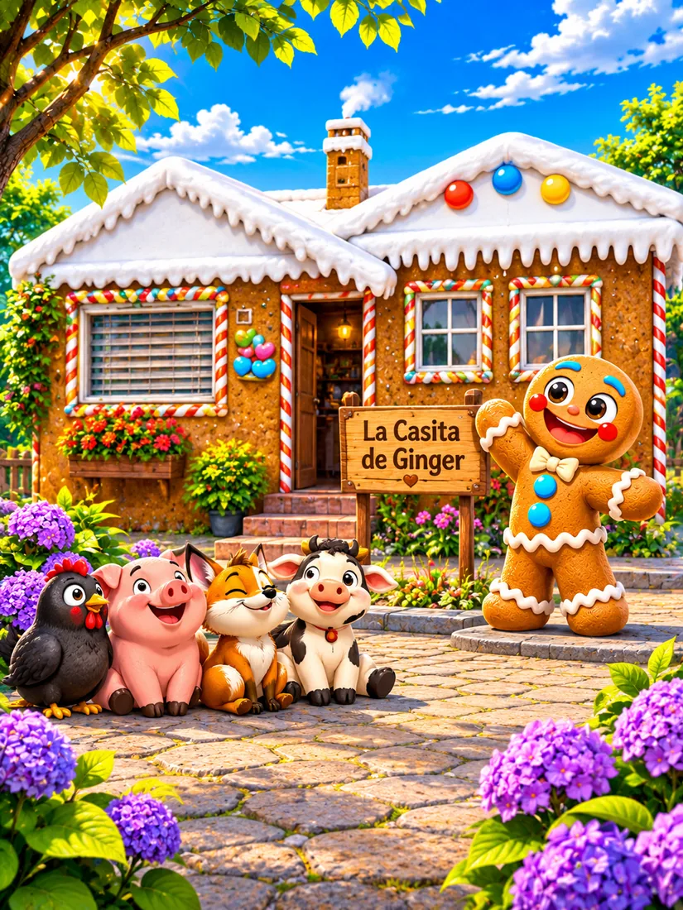
Un hogar dulce
Así llegué a Yungay 95, donde levanté mi casita de jengibre. Una casita hecha con dedicación, valentía, confianza y con todo el amor del mundo. Aquí pongo en práctica esas recetas llenas de cariño y la magia del sabor que vive en mis manos. En mi casita preparo dulcecitos caseros, cafecitos de grano, juguitos naturales, pancitos y muchas cosas ricas para grandes y pequeños.
13 / 14Para finalizar quiero que sepas algo: Todos llevamos magia dentro, y cuando confiamos, insistimos y hacemos las cosas con amor, podemos crear lugares donde el corazón sonríe y se siente en casa.
Fin
¡Gracias por acompañar a Ginger en su historia!
Presiona la flecha o la esquina de la página para pasar la hoja.
— UN PERSONAJE, MUCHAS AVENTURAS —
Las aventuras de Ginger
Bombero, astronauta, jardinero, doctor y muchas facetas más de nuestro personaje estrella.
Una Nochebuena el horno se recalentó y Ginger llegó con su manguera a tiempo: salvó la última bandeja de galletas.
Viajó a la Luna para comprobar si era de queso y volvió con polvo de estrellas para decorar las tortas.
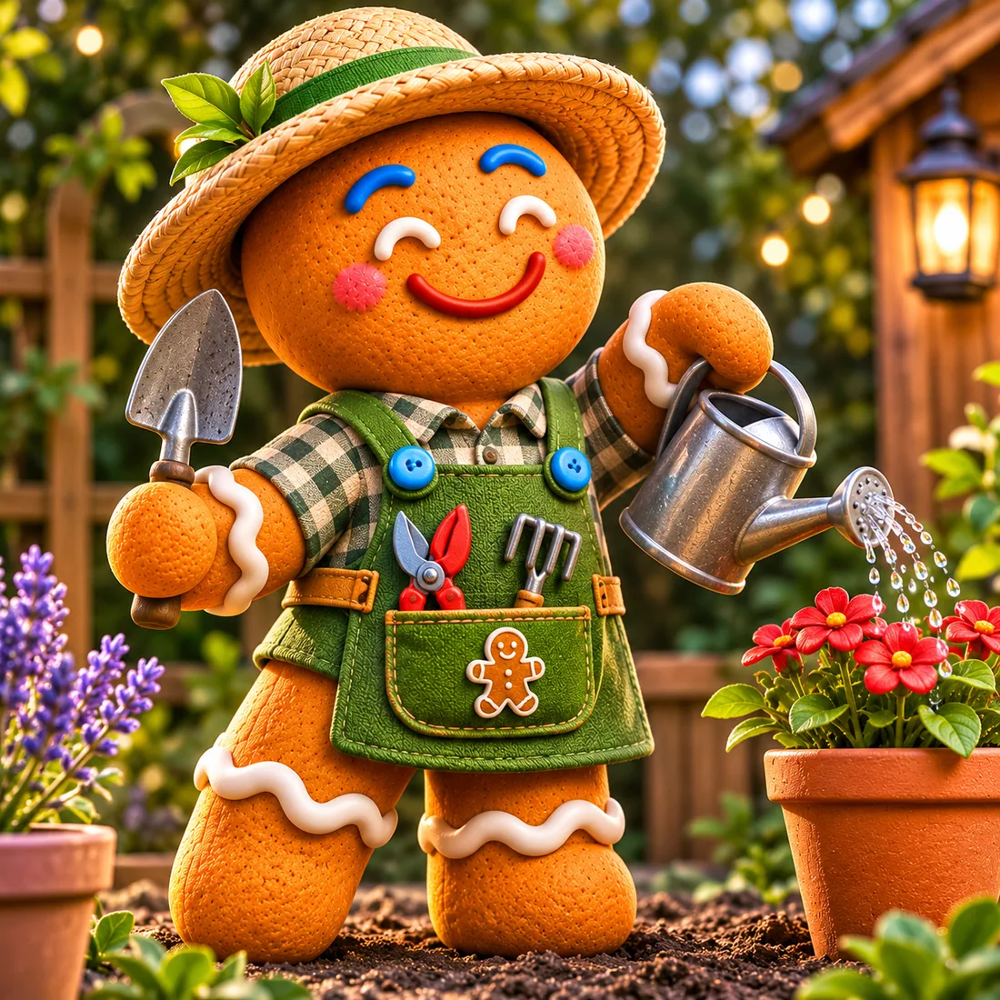
Plantó un huerto de menta y frutillas para que nunca falten en las recetas de La Casita.
Atiende a las galletas quebradas con un poquito de glasé, una venda de mazapán y mucho cariño.
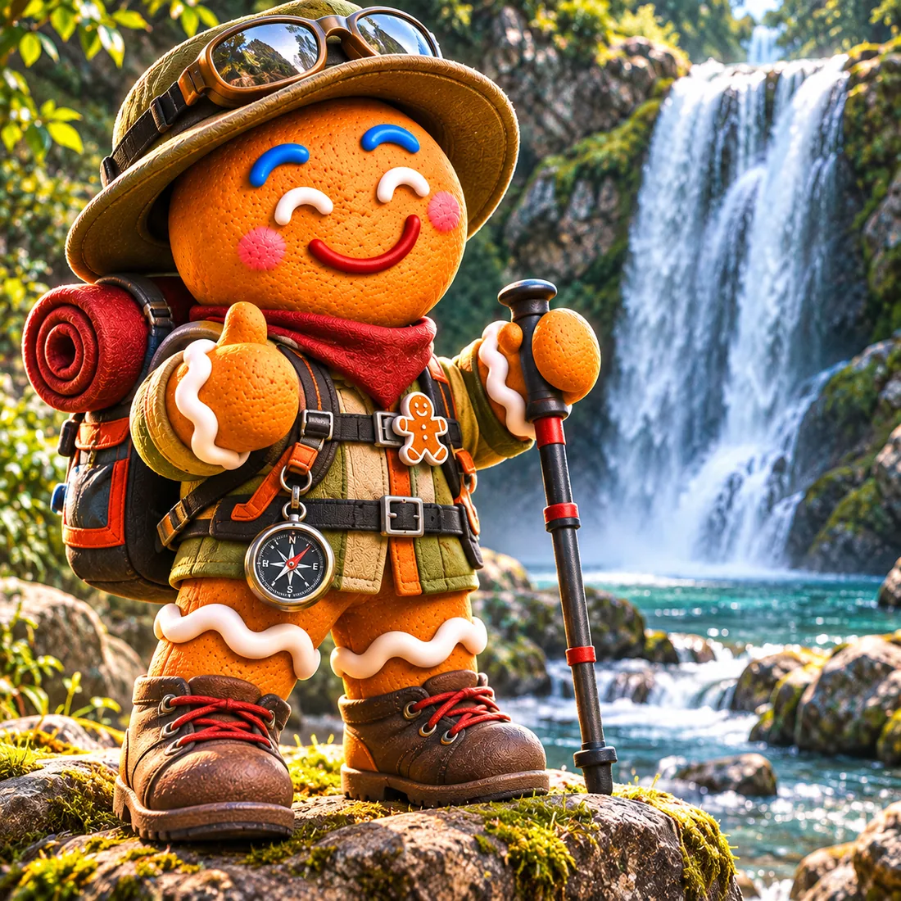
Recorrió los cerros de Ñuble con su mochila hasta encontrar la cascada más dulce de la región.
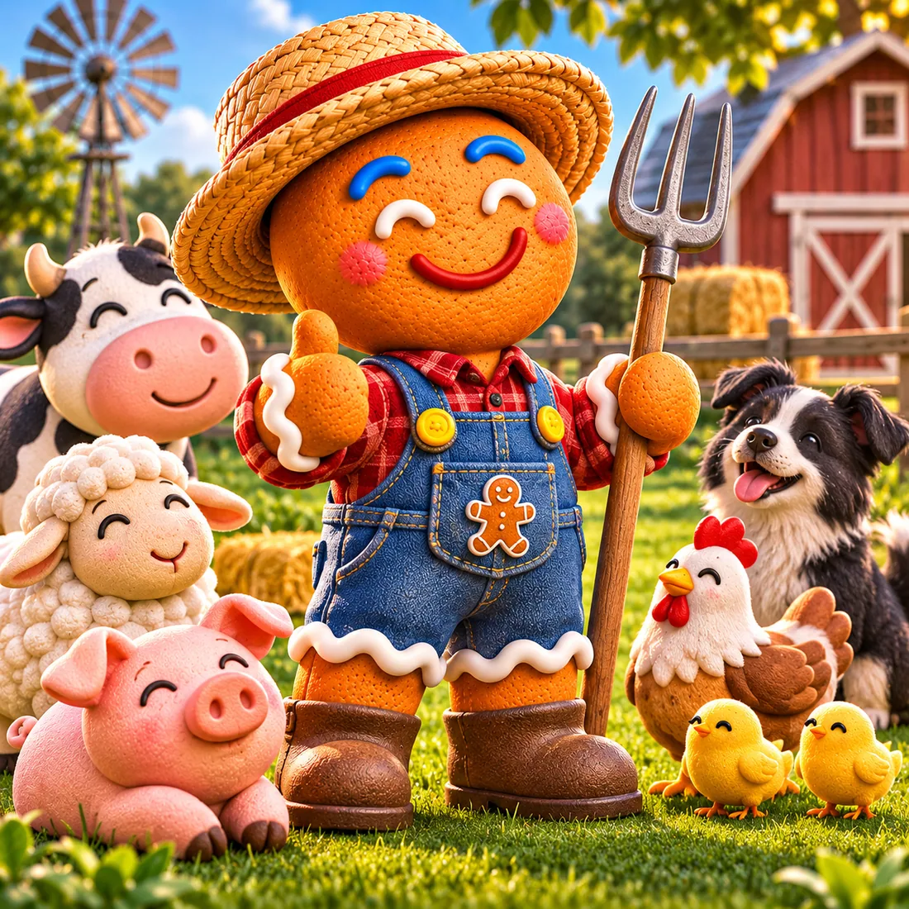
Madruga junto a las gallinas para conseguir los huevos más frescos de cada receta.
Cuando la cocina se llena de pedidos, respira hondo y encuentra la calma entre tanta azúcar.
— LO QUE LA INSPIRA —
Su misión
Su historia invita a confiar, perseverar y crear con cariño espacios donde todos se sientan acogidos.